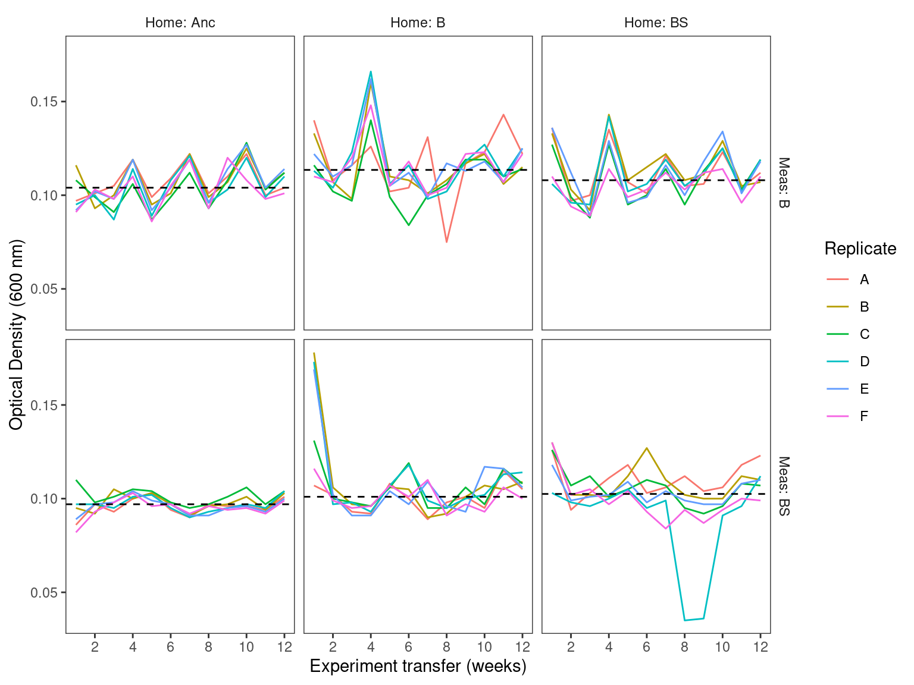

Process and plot bacteria densities
From the STR community densities workflow workflow
Abstract
Optical density was collected at every transfer of the main experiment. This notebook plots the optical density data.
1 Setup
This code loads required libraries and sets global variables
1.1 Read and format Optical Density Data
This code reads optical density data - OD600 and creates variables used later
Show/hide code
od <- readr::read_tsv(here::here(data_ds, "OD600.tsv")) %>%
dplyr::group_by(measure_env, evolution_env) %>%
dplyr::mutate(mean_od = median(od600)) %>%
dplyr::ungroup() %>%
dplyr::mutate(
measure_env_short = dplyr::case_when(
measure_env == "bact" ~ "Meas: B",
measure_env == "bact_strep" ~ "Meas: BS",
)
) %>%
dplyr::mutate(
home_env_short = dplyr::case_when(
evolution_env == "anc" ~ "Home: Anc",
evolution_env == "bact" ~ "Home: B",
evolution_env == "bact_strep" ~ "Home: BS"
)
) %>%
dplyr::mutate(
measure_env_short = factor(
measure_env_short,
levels = c("Meas: B", "Meas: BS")
),
home_env_short = factor(
home_env_short,
levels = c("Home: Anc", "Home: B", "Home: BS")
),
replicate = factor(replicate)
)2 Plot
This code constructs a ggplot2 plot of optical density data, saves it in raster and vector format, and places the plot in the notebook
Show/hide code
pod <- ggplot2::ggplot(od, aes(x = transfer, y = od600)) +
ggplot2::geom_line(aes(color = replicate)) +
ggplot2::geom_hline(aes(yintercept = mean_od), linetype = "dashed") +
ggplot2::scale_x_continuous(breaks = c(2, 4, 6, 8, 10, 12)) +
ggplot2::labs(y = "Optical Density (600 nm)", x = "Experiment transfer (weeks)", color = "Replicate") +
ggplot2::facet_grid(measure_env_short ~ home_env_short) +
ggplot2::theme_bw() +
ggplot2::theme(
panel.grid.major = element_blank(),
panel.grid.minor = element_blank(),
panel.background = element_blank(),
strip.placement = 'outside',
strip.background = element_blank(),
)
ggplot2::ggsave(
here::here(figs, "community_optical_density.svg"),
pod,
width = 8,
height = 6,
units = "in",
device = "svg"
)
ggplot2::ggsave(
here::here(figs, "community_optical_density.png"),
pod,
width = 8,
height = 6,
units = "in",
device = "png"
)
3 Export
We will want to try and use this data as predictors for the ML pipeline. We only have community composition data from days 4, 8 and 12 so we will subset those. We also set ciliate density to 0 for the measurement environments that don’t have ciliates